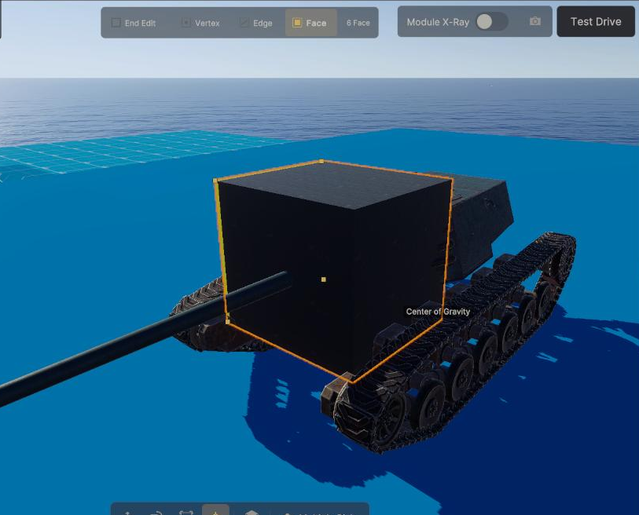

Poly Edit Tool
中文 | English
Run this command at the repository root to replay the examples through the local Unity MCP.
python Docs/Manual/manual/tools/tutorials.py run poly-edit-tool
Use the Poly Edit tool to change a vehicle's mesh geometry without leaving Tank Workshop. You edit the mesh attached to an item, then save it back into that item.
Get the Editable item ready
- Open Tank Workshop and go to Item.
- Search for Editable.
- Attach the Editable item to your vehicle.
- Select that item in the workspace.
Enter edit mode
- Click Edit. In the old UI this button was called Edit Polygons.
- The tool shelf appears. Pick Face, Edge, or Vertex for the part you want to change.
Move, rotate, or scale geometry
Pick the geometry you want to change, then use the Move, Rotate, or Scale gizmo as needed. Switch between Face, Edge, and Vertex whenever the selection you need is easier to grab that way.
Extrude a face
- Set the shelf to Face and select a face.
- Set Extrude Distance to the thickness you want.
- Click Extrude. The face is pushed out along its own normal, and new side faces are created around it.

Bevel an edge
- Set the shelf to Edge and select an edge.
- Set Bevel Amount to the width you want.
- Click Bevel. The edge is replaced by a chamfered band of new faces.
Finish and verify
- Click End Edit. You return to object mode and the edited mesh is written into the selected item.
- Save the vehicle.
- Reload the vehicle and confirm the shape is what you intended.
Click to expand MCP actionsClick to collapse MCP actions
Use a parent ruleGuid with an empty slot on a separate test vehicle. The calls select a face, run the real ProBuilder extrusion, and read back the stored mesh.
[
{
"tool": "vehicle_equip",
"arguments": {
"itemGuid": "1e8e9f60-3ed6-43b0-aa67-b8bd65f18cae",
"slotIndex": 0,
"isMain": false,
"parentRuleGuid": "${parent}"
},
"expect": {
"contains": "built=True"
},
"capture": {
"poly": {
"regex": "ruleGuid=([\\w-]+)"
}
}
},
{
"tool": "vehicle_focus",
"arguments": {
"ruleGuid": "${poly}"
},
"expect": {
"contains": "ok focused"
}
},
{
"tool": "invoke",
"arguments": {
"path": "static:ShanghaiWindy.Core.AssetBundleManager/LuaEnv/DoString",
"args": [
"local mode=CS.ShanghaiWindy.Core.GameModeManager.Instance:GetGameMode()\nlocal binding=assert(mode:GetBinding(\"${poly}\"))\nmode:EditMesh(binding.reference.proBuilderMesh)\nreturn mode.CurEditType:Get():ToString()",
"docs-workshop",
"null"
]
},
"expect": {
"contains": "ProBuilder"
}
},
{
"tool": "ui_click",
"arguments": {
"name": "gen_PbFaceButton"
},
"expect": {
"contains": "Clicked"
}
},
{
"tool": "invoke",
"arguments": {
"path": "static:ShanghaiWindy.Core.AssetBundleManager/LuaEnv/DoString",
"args": [
"local pb=CS.ShanghaiWindy.Core.GameModeManager.Instance:GetGameMode().ProBuilder\nlocal faces=pb.selectedMesh.faces:GetEnumerator()\nassert(faces:MoveNext())\nlocal list=assert(pb:GetSelectedFace())\nlist:Clear()\nlist:Add(faces.Current)\nlocal count=pb.selectedMesh.faceCount\npb:Extrude(0.25)\nassert(pb.selectedMesh.faceCount>count)\nreturn \"Extruded selected face\"",
"docs-workshop",
"null"
]
},
"expect": {
"contains": "Extruded selected face"
}
},
{
"tool": "ui_click",
"arguments": {
"name": "gen_PbObjectButton"
},
"expect": {
"contains": "Clicked"
}
},
{
"tool": "invoke",
"arguments": {
"path": "static:ShanghaiWindy.Core.AssetBundleManager/LuaEnv/DoString",
"args": [
"local mode=CS.ShanghaiWindy.Core.GameModeManager.Instance:GetGameMode()\nlocal rule=assert(mode:GetPickedRule())\nlocal got,bytes=rule:TryGetCustomBuffer()\nassert(mode.CurEditType:Get():ToString()==\"Object\" and got and #bytes>0)\nreturn \"Edited mesh stored in rule\"",
"docs-workshop",
"null"
]
},
"expect": {
"contains": "Edited mesh stored in rule"
}
}
]
Mesh types and their controls
The current mesh types are Visual, VisualHitBox, HitBox, InternalModule, and VisualInternalModule. Collider enable is set independently from the mesh type. Material and damage controls depend on the mesh type, so a control you see on one item may not apply to another.
Input formats
GLB is the supported model format for vehicle meshes; see the GLB import guide for its requirements. OBJ is not covered by that specification.